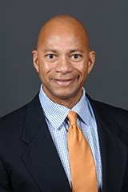

Anže Tavčar
Plavalec Anže Tavčar je znan slovenski plavalec, ki mu najboljše grejo šprinti kravel: 50m, 100m, 200m in 400m. Rojen je bil 2. Decembra 1994 v Ljubljani. Njegov najbolj znan dosežek je to, da je plaval 00:48:88 sec na 100m kravel. Končal se je na Univerzo za zobozdravnike.
Anthony Nesty
TrenerAnthony Nesty je glaven trener Florida(ZDA) ekipe. Rojen je bil 25. Novembra 1967. Ko je plaval, je bila njegova najboljša disciplina delfin. En njegov dosežek je bil, da je prišel v ZDA reprezentanco.
